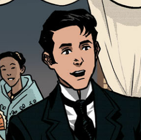
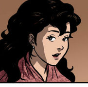
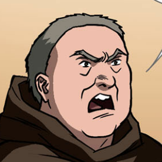
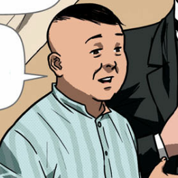

| CHARACTERS IN NOLI ME TANGERE |
|  |
Juan Crisóstomo Ibarra y Magsalin |
- Ibarra is the intelligent son of Don Rafael, and is the main character of this novel.
- During the timeline of the novel, he had just recently returned from studying in Europe.
|
|  |
María Clara de los Santos y Alba |
- María Clara is said to be the daughter of Kapitan Tiago, and the goddaughter of Padre Dámaso.
- She is a bright young woman of high social status.
|
|  |
Padre Dámaso Verdolagas |
- Padre Damaso is a Spanish priest, and the former kura of San Diego.
- During the time of the novel, he had been residing in the Philippines for about 20 years.
|
|  |
Don Santiago de los Santos |
- Kapitan Tiago is the richest man in Binondo, and the father of María Clara.
- He is of high social standing, and isn't considered Filipino or "lower" by the Spaniards.
|